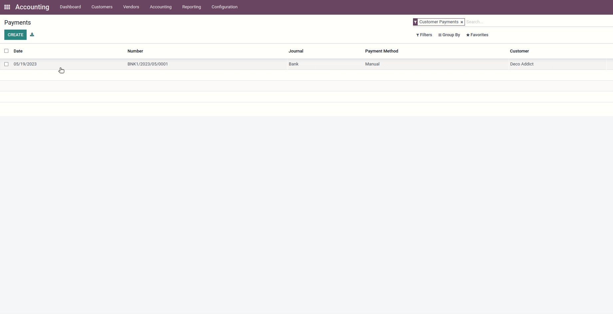

<link href="https://fonts.googleapis.com/css2?family=Open+Sans:ital,wght@0,300;0,400;0,500;0,600;0,700;0,800;1,300;1,400;1,500;1,600;1,700;1,800&amp;display=swap"
      rel="stylesheet"></link>
<section class="py-3">
    <div class="container" style="font-family: 'Open Sans', sans-serif;">
        <div class="p-5 bg-white"
             style="border-radius: 10px; box-shadow: -40px 40px 160px 0 rgb(0 0 0 / 8%), -8px 8px 15px 0 rgb(120 120 120 / 4%), 3px 3px 30px 0 rgb(0 0 0 / 4%) !important;">
            <h1 class="text-center" style="font-size: 48px;">
                Partial Manual Reconcile
            </h1>
            <h2 class="text-center"
                style="font-size: 20px; font-weight: 400;">
            The Partial Manual Reconcile module allows to reconcile payments with specific invoices in a flexible and
            customizable manner. This module enables users to manually select and reconcile payments to invoices. With
            this module, <b>users can define the exact amount they want to reconcile for each invoice</b>, giving them
            greater control over their financial transactions. This feature allows for greater accuracy and ensures that
            each invoice is matched with the appropriate payment. Overall, the Partial Manual Reconcile module provides
            a convenient tool for managing payments and invoices, allowing users to streamline their financial
            operations and ensure accuracy in their accounting processes.
            </h2>
            <div class="mt-4">
                
            </div>
        </div>
    </div>
</section>
